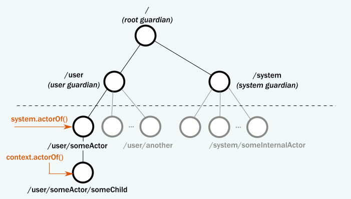

Akka 的 Actor 总是属于父 Actor。通常，你可以通过调用getContext().actorOf()来创建 Actor。与创建一个"独立的" Actor 不同，这会将新 Actor 作为一个子节点注入到已经存在的树中：创建 Actor 的 Actor 成为新创建的子 Actor 的父级。你可能会问，你创造的第一个 Actor 的父节点是谁？
如下图所示，所有的 Actor 都有一个共同的父节点，即用户守护者。可以使用system.actorOf()在当前 Actor 下创建新的 Actor 实例。正如我们在「快速入门 Akka Java 指南」中介绍的那样，创建 Actor 将返回一个有效的 URL 引用。例如，如果我们用system.actorOf(…, "someActor")创建一个名为someActor的 Actor，它的引用将包括路径/user/someActor。

Part 1: Actor Architecture
事实上，在你在代码中创建 Actor 之前，Akka 已经在系统中创建了三个 Actor 。这些内置的 Actor 的名字包含guardian，因为他们守护他们所在路径下的每一个子 Actor。守护者 Actor 包括：
/，根守护者（root guardian）。这是系统中所有 Actor 的父 Actor，也是系统本身终止时要停止的最后一个 Actor。
/user，守护者（guardian）。这是用户创建的所有 Actor 的父 Actor。不要让用户名混淆，它与最终用户和用户处理无关。使用 Akka 库创建的每个 Actor 都将有一个事先准备的固定路径/user/。
/system，系统守护者（system guardian）。这是除上述三个 Actor 外，系统创建的所有 Actor 的父 Actor，
在Hello World示例中，我们已经看到system.actorOf()如何直接在/user下创建 Actor。我们称之为顶级 Actor，尽管实际上它只是在用户定义的层次结构的顶部。你的ActorSystem中通常只有一个（或极少数）顶级 Actor。我们通过从现有的 Actor 调用context.actorOf()来创建子 Actor 或非顶级 Actor。context.actorOf()方法具有与system.actorOf()相同的签名，后者是其对应的顶级。
查看 Actor 层次结构的最简单方法是打印ActorRef实例。在这个小实验中，我们创建了一个 Actor，打印了它的引用，创建了这个 Actor 的一个子 Actor，并打印了这个子 Actor 的引用。我们从Hello World项目开始，如果你还没有下载它，请从「Lightbend Tech Hub」下载 QuickStart 项目。
packagecom.example;importakka.actor.AbstractActor;importakka.actor.AbstractActor.Receive;importakka.actor.ActorRef;importakka.actor.ActorSystem;importakka.actor.Props;publicclassActorHierarchyExperiments{publicstaticvoidmain(String[]args)throwsjava.io.IOException{ActorSystemsystem=ActorSystem.create("testSystem");ActorReffirstRef=system.actorOf(PrintMyActorRefActor.props(),"first-actor");System.out.println("First: "+firstRef);firstRef.tell("printit",ActorRef.noSender());System.out.println(">>> Press ENTER to exit <<<");try{System.in.read();}finally{system.terminate();}}}classPrintMyActorRefActorextendsAbstractActor{staticPropsprops(){returnProps.create(PrintMyActorRefActor.class,PrintMyActorRefActor::new);}@OverridepublicReceivecreateReceive(){returnreceiveBuilder().matchEquals("printit",p->{ActorRefsecondRef=getContext().actorOf(Props.empty(),"second-actor");System.out.println("Second: "+secondRef);}).build();}}
注意信息要求第一个 Actor 完成工作的方式。我们使用父 Actor 的引用firstRef.tell("printit", ActorRef.noSender())发送消息。当代码执行时，输出包括第一个 Actor 的引用，以及匹配printit模式时创建的子 Actor 的引用。你的输出应该与下面的内容相似：
Actor 在被创建时就会出现，然后在用户请求时被停止。每当一个 Actor 被停止时，它的所有子 Actor 也会被递归地停止。这种行为大大简化了资源清理，并有助于避免诸如由打开的套接字和文件引起的资源泄漏。事实上，在处理初级多线程代码时，一个通常被忽视的困难是各种并发资源的生命周期管理。
要停止 Actor，建议的模式是调用 Actor 内部的getContext().stop(getSelf())来停止自身，通常是对某些用户定义的停止消息的响应，或者当 Actor 完成其任务时。从技术上讲，通过调用getContext().stop(actorRef)是可以停止另一个 Actor 的，但通过这种方式停止任意的 Actor 被认为是一种糟糕的做法：停止 Actor 的一个比较好的方法是，尝试向他们发送一个"毒丸（PoisonPill）“或自定义的停止消息。
Akka Actor 的 API 暴露了许多生命周期的钩子，你可以在 Actor 的实现中覆盖这些钩子。最常用的是preStart()和postStop()方法。
preStart()在 Actor 启动之后但在处理其第一条消息之前调用。
postStop()在 Actor 停止之前调用，在此时之后将不再处理任何消息。
让我们在一个简单的实验中使用生命周期中的preStart()和postStop()钩子来观察停止一个 Actor 时的行为。首先，将以下两个 Actor 类添加到项目中：
classStartStopActor1extendsAbstractActor{staticPropsprops(){returnProps.create(StartStopActor1.class,StartStopActor1::new);}@OverridepublicvoidpreStart(){System.out.println("first started");getContext().actorOf(StartStopActor2.props(),"second");}@OverridepublicvoidpostStop(){System.out.println("first stopped");}@OverridepublicReceivecreateReceive(){returnreceiveBuilder().matchEquals("stop",s->{getContext().stop(getSelf());}).build();}}classStartStopActor2extendsAbstractActor{staticPropsprops(){returnProps.create(StartStopActor2.class,StartStopActor2::new);}@OverridepublicvoidpreStart(){System.out.println("second started");}@OverridepublicvoidpostStop(){System.out.println("second stopped");}// Actor.emptyBehavior is a useful placeholder when we don't// want to handle any messages in the actor.@OverridepublicReceivecreateReceive(){returnreceiveBuilder().build();}}
父 Actor 和子 Actor 在他们的生命周期中是相互联系的。当一个 Actor 失败（抛出一个异常或从接收中冒出一个未处理的异常）时，它将暂时挂起。如前所述，失败信息被传播到父 Actor，然后父 Actor 决定如何处理由子 Actor 引起的异常。这样，父 Actor 就可以作为子 Actor 的监督者（supervisors）。默认的监督策略是停止并重新启动子 Actor。如果不更改默认策略，所有失败都会导致重新启动。
classSupervisingActorextendsAbstractActor{staticPropsprops(){returnProps.create(SupervisingActor.class,SupervisingActor::new);}ActorRefchild=getContext().actorOf(SupervisedActor.props(),"supervised-actor");@OverridepublicReceivecreateReceive(){returnreceiveBuilder().matchEquals("failChild",f->{child.tell("fail",getSelf());}).build();}}classSupervisedActorextendsAbstractActor{staticPropsprops(){returnProps.create(SupervisedActor.class,SupervisedActor::new);}@OverridepublicvoidpreStart(){System.out.println("supervised actor started");}@OverridepublicvoidpostStop(){System.out.println("supervised actor stopped");}@OverridepublicReceivecreateReceive(){returnreceiveBuilder().matchEquals("fail",f->{System.out.println("supervised actor fails now");thrownewException("I failed!");}).build();}}
supervised actor started
supervised actor fails now
supervised actor stopped
supervised actor started
[ERROR] [03/29/2017 10:47:14.150] [testSystem-akka.actor.default-dispatcher-2] [akka://testSystem/user/supervising-actor/supervised-actor] I failed!
java.lang.Exception: I failed!
at tutorial_1.SupervisedActor$$anonfun$receive$4.applyOrElse(ActorHierarchyExperiments.scala:57)
at akka.actor.Actor$class.aroundReceive(Actor.scala:513)
at tutorial_1.SupervisedActor.aroundReceive(ActorHierarchyExperiments.scala:47)
at akka.actor.ActorCell.receiveMessage(ActorCell.scala:519)
at akka.actor.ActorCell.invoke(ActorCell.scala:488)
at akka.dispatch.Mailbox.processMailbox(Mailbox.scala:257)
at akka.dispatch.Mailbox.run(Mailbox.scala:224)
at akka.dispatch.Mailbox.exec(Mailbox.scala:234)
at akka.dispatch.forkjoin.ForkJoinTask.doExec(ForkJoinTask.java:260)
at akka.dispatch.forkjoin.ForkJoinPool$WorkQueue.runTask(ForkJoinPool.java:1339)
at akka.dispatch.forkjoin.ForkJoinPool.runWorker(ForkJoinPool.java:1979)
at akka.dispatch.forkjoin.ForkJoinWorkerThread.run(ForkJoinWorkerThread.java:107)
我们看到失败后，被监督的 Actor 停止并立即重新启动。我们还看到一个日志条目，报告处理的异常，在本例中是我们的测试异常。在这个例子中，我们使用了preStart()和postStop()钩子，这是重启后和重启前默认调用的钩子，因此我们无法区分 Actor 内部是第一次启动还是重启。这通常是正确的做法，重新启动的目的是将 Actor 设置为已知的良好状态，这通常意味着一个干净的开始阶段。实际上，在重新启动时，调用的是preRestart()和postRestart()方法，但如果不重写这两个方法，则默认分别委托给postStop()和preStart()。你可以尝试重写这些附加方法，并查看输出是如何变化的。